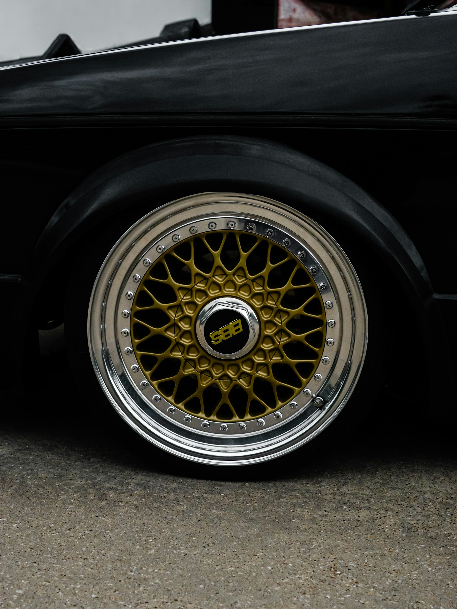
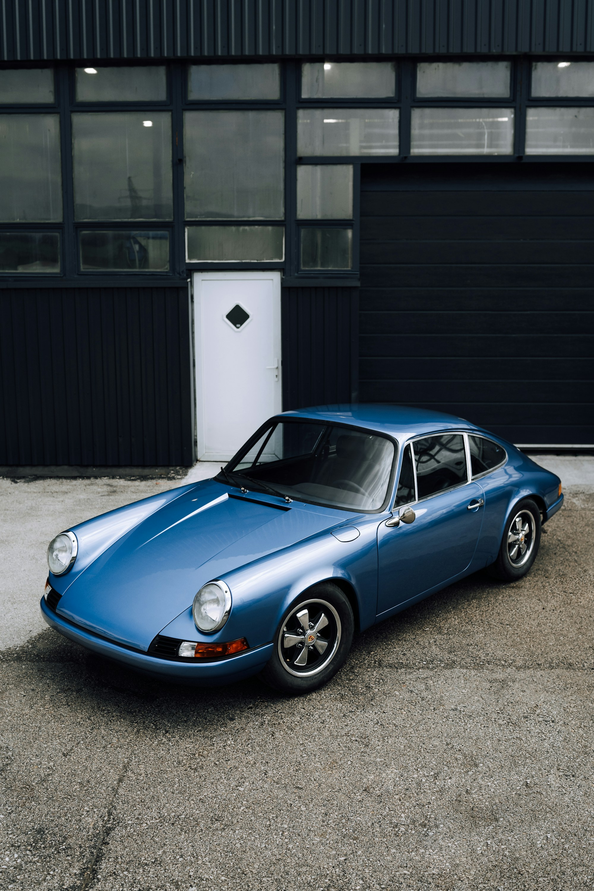
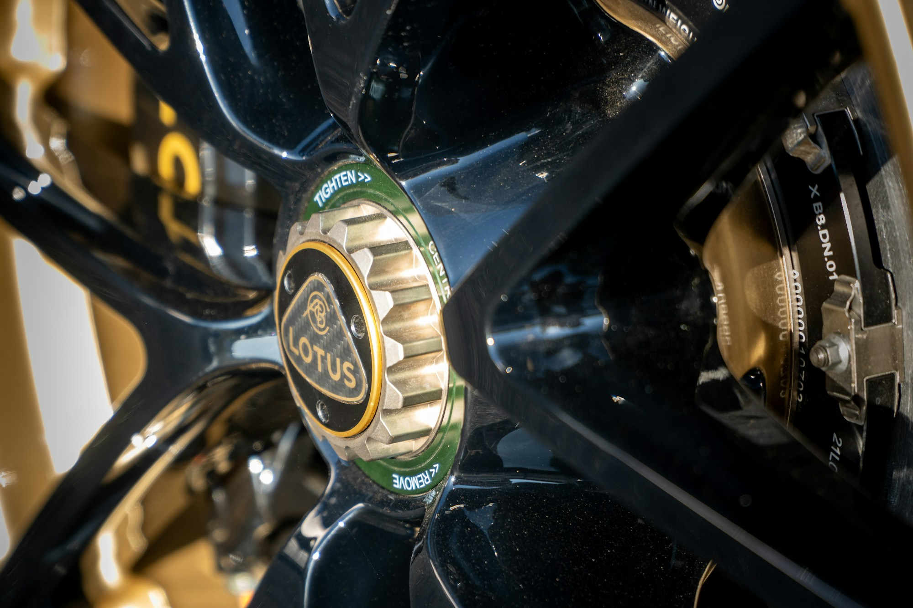
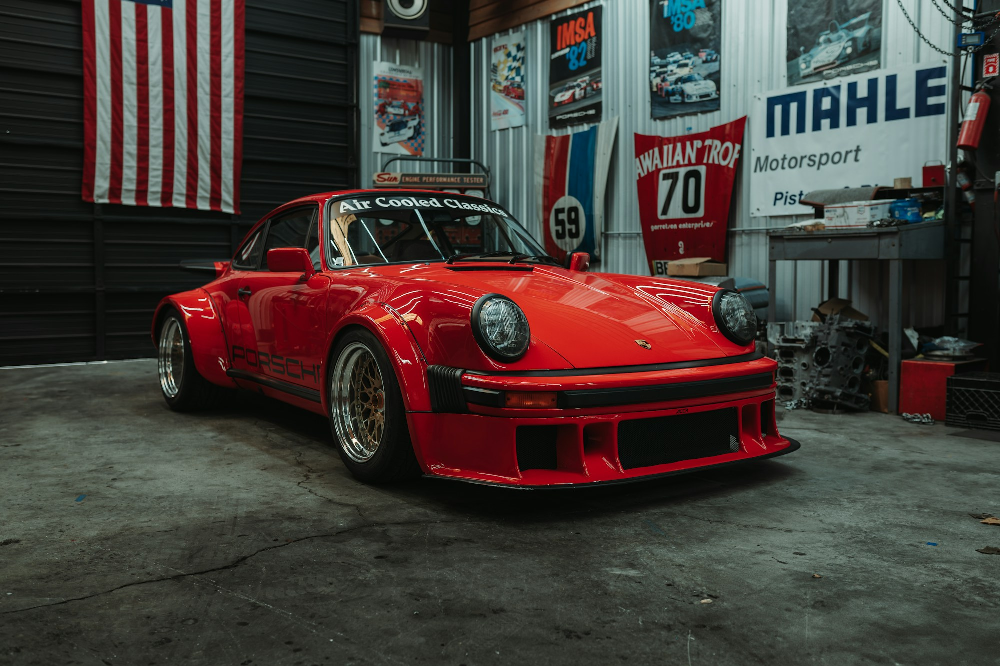

In the summer of 1971, three privately entered Porsches arrived at Le Mans on wheels forged by a small Cologne workshop — lighter than anything in production, with a profile drawn for the circuit.
The original forging dies were lost for thirty years. We found the drawings in a storage unit outside Stuttgart.
The Halden 71 is what they built.


The Halden 71 — Polished Bronze

Each Halden 71 is assembled by a single craftsman at our Cologne atelier. The three-piece construction — billet centre, centre-spun lip, hand-fitted barrel — is torqued and inspected over four working days.
Nothing leaves until it is correct.